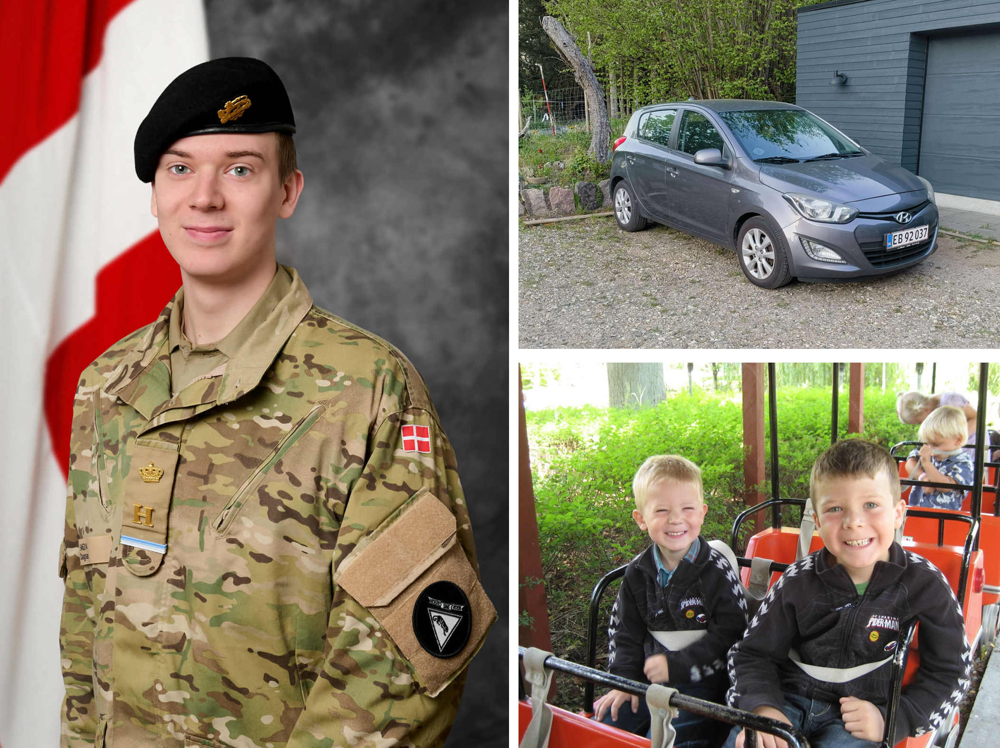
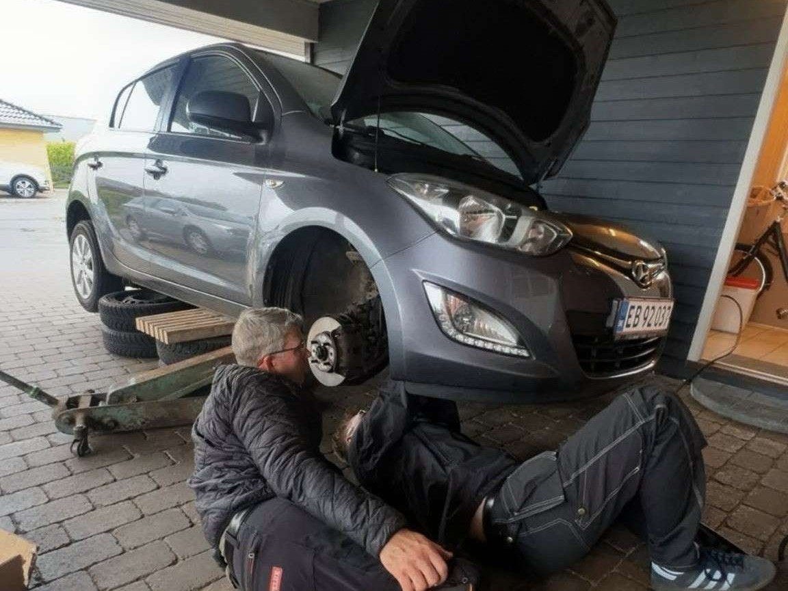
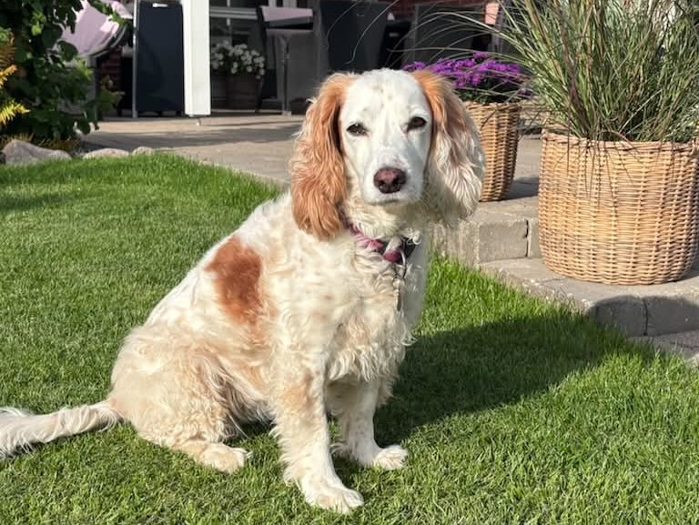
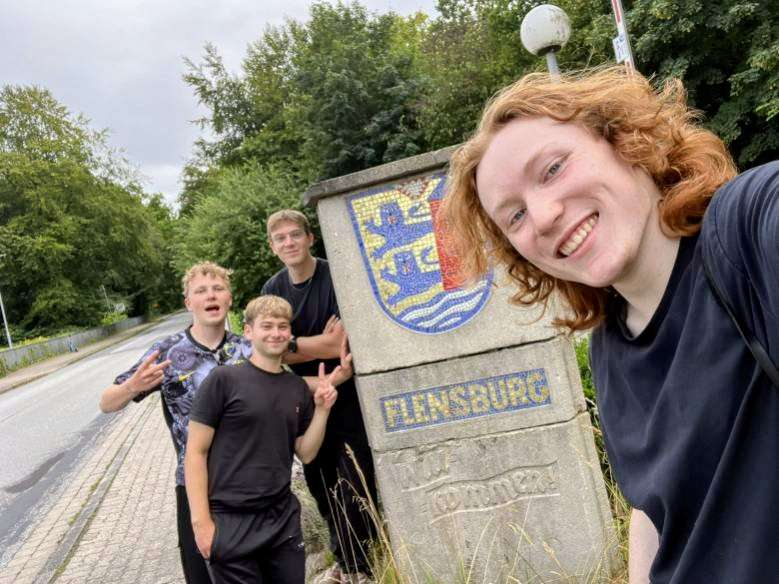
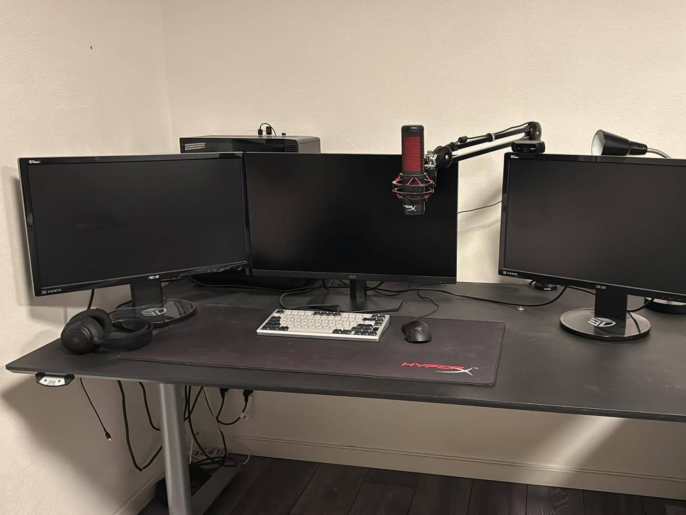

About me
A little about me and my hobbies
I'm Lucas, a 20-year-old software engineering student from Horsens, Denmark. I enjoy turning ideas into solutions and learning something new with every project. Outside of the computer, I like cars, working out, running and spending time with the people I care about. I'm curious, passionate and always up for a new challenge, whether it's a new project, a new place or a new skill.


My car
I own a 2014 Hyundai i20, which I bought just two weeks after my 18th birthday. With around 230,000 km (140,000 miles) on the odometer, it requires regular maintenance and occasional repairs. I enjoy working with mechanical components and prefer to do most of the work myself rather than taking it to a mechanic. This has given me hands-on experience with car maintenance, troubleshooting and problem solving, while allowing me to develop practical skills along the way.
Sallie
This is my dog, Sallie. She is a 10-year-old Cocker Spaniel FT. When she was younger, my dad would often take her hunting. As a result, she is very well trained and has a great sense of obedience. Despite her age, she is still an active and loving dog who has been a part of my family for many years.


The yearly biking trip
For the past three years, some of my friends and I have made it a tradition to go on a three-day cycling trip once a year where we sleep in shelters. Each year, we choose a new destination, with our trips taking us to Skagen, the West Coast of Denmark, and most recently, Flensburg. It's a great way to challenge ourselves, explore new places, and spend time together.
Gaming
Gaming is one of my hobbies, and I enjoy playing a wide variety of games, including Minecraft, Planet Coaster, Counter-Strike, Battlefield V, and Far Cry. I like both creative games where I can build and experiment, as well as competitive games that require teamwork and strategy. I also have a fairly powerful gaming PC with 32 GB of RAM and an RTX 5070 Ti, which allows me to enjoy games with high graphics settings and smooth performance.
